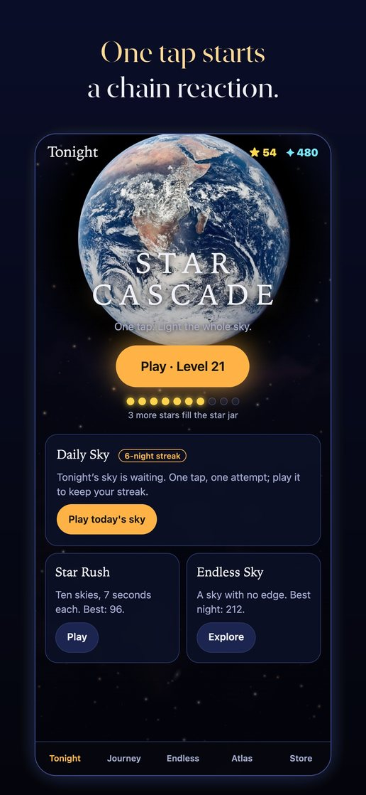
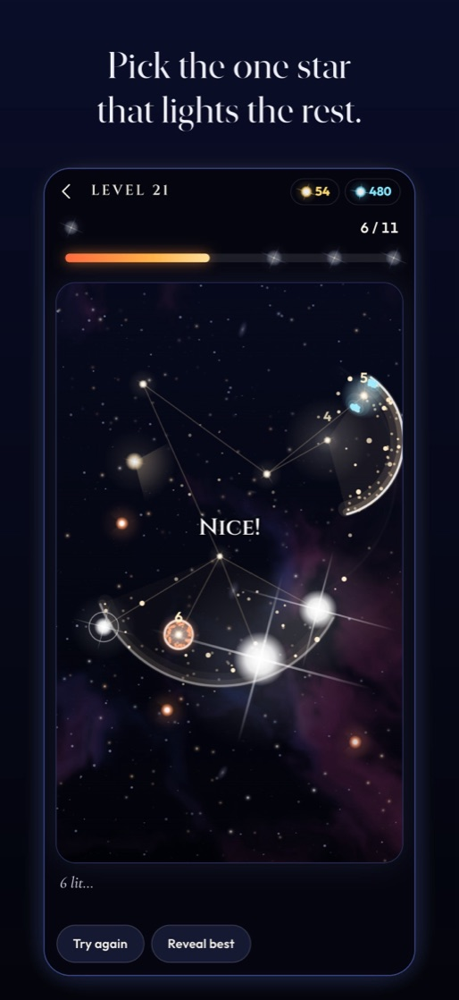
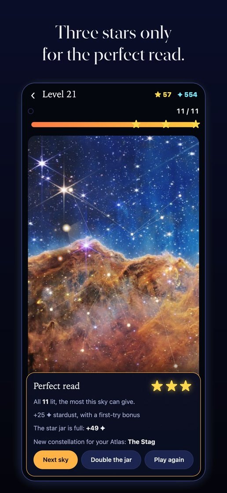

One tap. Light the whole sky.
Every sky is a puzzle with one question: which star?
Tap a star and it sends out a wave of light. Every star the wave touches lights up and sends its own. Choose well and one tap sets the whole sky burning. Choose the obvious star and you will usually be wrong.



What is in it
- One tap, no hurry. No timers, no lives. Touch and hold any star to see where its light would go.
- Stars that behave differently. Red dwarfs glow all round, suns throw a crescent, blue giants fire a long beam, pulsars fire two, and a red giant needs two waves to wake.
- 232 skies in eleven worlds, all free. Each world brings one new idea: asteroids and dust, black holes, twin stars that burst together, antistars that answer light with darkness, hungry black holes that grow, comets that carry fire, meteors that shatter, and the supernova. Every sky's best answer is proven, so three stars always means you found it.
- A Daily that changes with the weekday, the same for everyone: one attempt, the answer afterwards, and a streak that pays.
- A constellation to collect every week: five Dailies in a week complete it, and it stays in your Atlas.
- Endless Sky, a sky with no edge, for a minute or an evening.
- Rankings on Game Center, if you want them: Journey stars, longest streak, best Endless night.
- Real skies behind the game: ten NASA photographs to collect with stardust you earn by playing.
What it costs
Every world, the Daily and Endless Sky are free, with occasional adverts. Catch Fire Complete is one purchase, kept for good: it removes every advert, gives you every sky theme, and makes reveals and telescope looks free. A Jar of Stardust (500 stardust) can be bought separately by anyone who wants a theme sooner; stardust is also earned by playing. There is no subscription.
Catch Fire is made by Gaborandi. Sky photographs: NASA, ESA, CSA, STScI, JPL-Caltech, USGS, Space Science Institute and the Solar Dynamics Observatory.